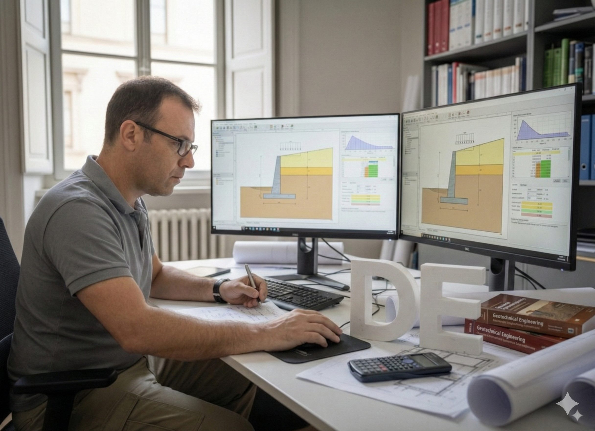

Expertise Technique & Calcul d'ouvrage
Dans le cadre d’une réquisition judiciaire, des évaluations techniques et structurelles des murs de soutènement ont été réalisées, comprenant la vérification de la conformité réglementaire ainsi que des calculs numériques de stabilité. L’expertise a porté sur l’état des matériaux, la stabilité globale de l’ouvrage sous charges permanentes et variables, ainsi que sur le respect des normes de sécurité. Les analyses menées ont conduit à l’émission d’un avis quant à l’état général et à la stabilité du mur.
Dans le cadre du contrôle de conformité post-exécution, des relevés sont effectués sur site afin de comparer la réalisation réelle aux plans d’exécution. Un diagnostic approfondi de l’état de conservation des murs est réalisé, visant à identifier d’éventuels défauts, désordres ou anomalies affectant la structure. Des sondages non destructifs ont été menés pour contrôler le positionnement et l’intégrité des armatures. Ces investigations permettent d’évaluer la conformité de l’ouvrage aux prescriptions techniques et de confirmer sa stabilité ainsi que sa durabilité.
Ouvrage soutennement
Des investigations et évaluations structurelles approfondies des murs de soutènement, quelle quent l’analyse des caractéristiques mécaniques des matériaux, la vérification de la stabilité globale et locale des ouvrages, ainsi que l’évaluation de leur état de conservation. À l’issue de ces analyses, des conclusions techniques seront formulées quant à leur intégrité structurelle, leur niveau de sécurité et leur durabilité.